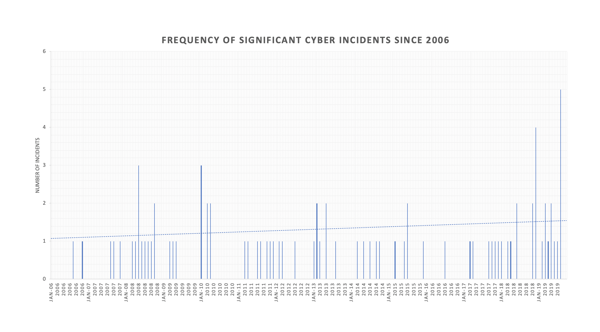

Cyber Espionage and Cyber Threats
PART Five | A Visualization of China's Use of Soft Power Around the World
China's use of soft power poses a threat to United States foreign policy interests around the world. In 2018 the U.S. Intelligence Community identified China as a potential threat to the United States in their Worldwide Threat Assessment.
Cyber Espionage and Cyber Threats: "Russia, China, Iran, and North Korea will pose the greatest cyber threats to the United States during the next year. China will continue to use cyber espionage and bolster cyber-attack capabilities to support national security priorities" (Director of National Intelligence, 2018, p. 6).
The Center for Strategic and International Studies (CSIS) published a list of significant cyber incidents around the world since 2006. In the 42-page document, 89 of the 516 cyber incidents world- wide were related to Chinese actors. The database “focused on cyber-attacks on government agencies, defense and high-tech companies, or economic crimes with losses of more than a million dollars” (CSIS, 2019). Between 2006 and 2019 there has been a slight increase in the frequency of cyber incidents with either accused or responsible Chinese actors. Because China seeks to become a cyber power with investments in fiber optic cable infrastructure and research in satellite technology — it is not surprising that China is playing a greater role in cyber espionage.
During President Barack Obama’s term in office an arms-control agreement for cyberspace was agreed upon between China and the United States. For around 18 months the number of Chinese attacks against American computer systems declined, but “soon after President Trump took office, China’s cyber espionage picked up again and, according to intelligence officials and analysts, accelerated in the last year as trade conflicts and other tensions began to poison relations between the world’s two largest economies” (Sanger & Myers, 2018). A notable Chinese cybersecurity hacking group affiliated with the People’s Liberation Army is PLA Unit 61398, otherwise known as APT1, Comment Crew, Comment Panda, or GIF89a. Officers of PLA Unit 61398 have been “linked to a wide range of cyber operations targeting U.S. private sector entities for espionage purposes” (“PLA Unit 61398 Council on Foreign Relations”, 2019). Targets of the PLA Unit 61398 include the United States, Taiwan, Israel, United Kingdom, Canada, and Japan. In May 2014, five officers of the PLA Unit 61398 were indicted by the U.S. Department of Justice on charges of theft of intellectual property, confidential business information, and the use of malware. For more incidents of cyber espionage and cyber threats in the domain of U.S. Critical Infrastructure, U.S. Defense Industrial Entities, and U.S. Allies and Partners view Part Three: Counterintelligence and Foreign Denial and Deception.
In research for Chinese Counterintelligence and Foreign Denial and Deception there was various literature on Chinese-based cyber espionage and its implications for companies, governments, and private citizens around the world. The following are a selection of published analytical academic papers, news articles, and policy research papers: